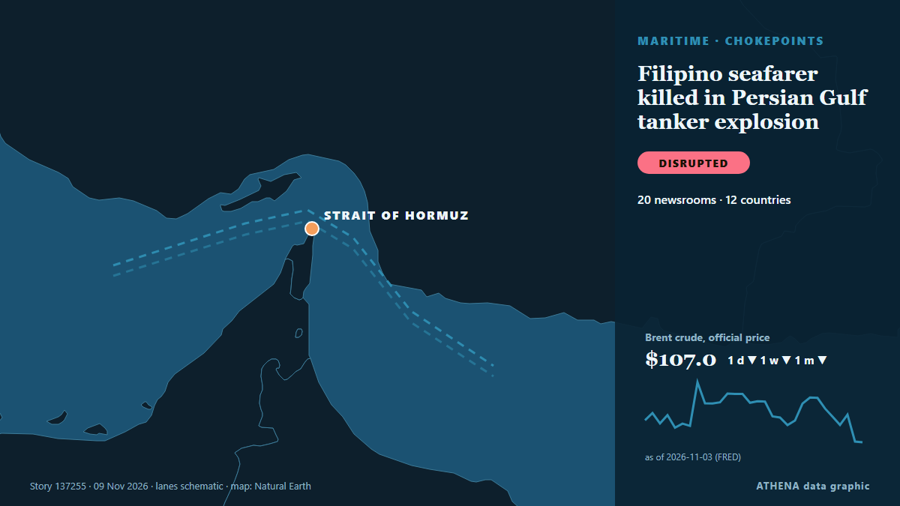

Ναυτιλία & λιμάνια
ΧορηγούμενοΠαρουσιάζεται από  Cybernetics and Artificial Intelligence Lab Welcome to the Cybernetics and Artificial Intelligence Laboratory, established at the Department of Business Administration of the National and Kapodistrian University of Athens. The lab is headed by Professor Dimitrios Thomakos. The lab aims to do research that can be published in top venues. Our research uses tools and methods of Artificial Intelligence, and lies in the following areas: - Forecasting - Decision making - Cyber security - Finance We are always looking forward to collaborating with exceptional students!
Cybernetics and Artificial Intelligence Lab Welcome to the Cybernetics and Artificial Intelligence Laboratory, established at the Department of Business Administration of the National and Kapodistrian University of Athens. The lab is headed by Professor Dimitrios Thomakos. The lab aims to do research that can be published in top venues. Our research uses tools and methods of Artificial Intelligence, and lies in the following areas: - Forecasting - Decision making - Cyber security - Finance We are always looking forward to collaborating with exceptional students!
| 27 Οκτ | 0 |
|---|---|
| 28 Οκτ | 0 |
| 29 Οκτ | 0 |
| 30 Οκτ | 0 |
| 31 Οκτ | 0 |
| 1 Νοε | 1 |
| 2 Νοε | 0 |
| 3 Νοε | 0 |
| 4 Νοε | 2 |
| 5 Νοε | 5 |
| 6 Νοε | 7 |
| 7 Νοε | 4 |
| 8 Νοε | 3 |
| 9 Νοε | 1 |
Οι τίτλοι των ειδήσεων παρουσιάζονται στα αγγλικά, όπως δημοσιεύτηκαν.

Filipino seafarer killed in Persian Gulf tanker explosion
A Filipino seafarer died after an explosion aboard the Marshall Islands-flagged oil products tanker MT Velos Sapphire in the Persian Gulf on 5 November, the… από Daily Tribune
Hapag-Lloyd passes 1m teu in Africa and targets 1.7m teu by 2030
Hapag-Lloyd's African volumes have crossed 1m teu, the carrier said as it marked 20 years in South Africa. από Container Magazine
KONGSBERG expands Aegir SSA sonar family alongside virtual operator for maritime security and navigation
With the launch of Aegir17 and Aegir57N, KONGSBERG is now taking orders for all three models in its Aegir SSA (Subsea Situational Awareness) sonar family, offering tailored solutions for critical… από Naval News
ESG Shipping Awards International – THE CONFERENCE 2026
From Recognition to Real-World Action: Shipping Leaders Share Strategies for a Changing World The ESG Shipping Awards International – THE. από Cyprus Shipping News
Iran war latest: UAE rescues 22 crew members from burning cargo ship in Gulf of Oman
TAMPA, Fla., Nov 7: U.S. Central Command (CENTCOM) forces disabled a commercial vessel in the Gulf of Oman, Nov. από Arab Times
Tanker Burns After Strike in Strait of Hormuz
On Saturday, at least two tankers were attacked in the Strait of Hormuz, including one that caught fire. από The Maritime Executive
UKMTO reported incident with bulk carrier near UAE coast
No further details were known at the time of the report. από TASS (English)
3rd oil tanker catches fire on Hormuz Strait: IRGC Navy
"One of the vessels is a supertanker; it is currently engulfed in flames following a powerful explosion," the Iranian Revolutionary Guard Corps (IRGC) Navy spokesperson said. από The Jerusalem Post
Tanker Catches Fire Off Oman's Khasab; Crew Evacuated
MUSCAT, Nov 8 : A tanker caught fire approximately eight nautical miles northwest of Khasab, Oman, on Saturday, prompting the evacuation of its crew, according to the United Kingdo... από Arab Times
Iran says 3 tankers caught fire in Hormuz
The Revolutionary Guards did not specify the names or nationality of the tankers. από Free Malaysia Today
Strait of Hormuz will stay closed until US accepts its terms: Iran
Tehran, IRNA – Iran’s Armed Forces have control over the Strait of Hormuz, which will remain closed until the United States accepts Tehran’s conditions, Army spokesperson Brigadier General Mohammad… από IRNA (English)
Russia Reroutes Pig Iron to Arctic Port Over Black Sea Strikes
Russian exporters have begun shipping pig iron through the Arctic port of Murmansk for the first time since 1996, rerouting cargoes away from the Black Sea following nearly 700 maritime strikes this… από Kyiv Post
IMO Council Urges Stronger Protection Of Seafarers Amid Threats To Global Shipping
The IMO Council has reaffirmed its commitment to protecting seafarers amid rising maritime security threats, condemning attacks on commercial vessels. από Marine Insight
Türkiye warns French-flagged vessel against unauthorised research in Eastern Mediterranean
Türkiye has warned that a French-flagged vessel is planning to conduct unauthorised marine scientific research in an area of the Eastern Mediterranean that Ankara considers part of its continental… από AzerNews
Singapore-Norway launch joint research grant call to advance greener shipping
The Maritime and Port Authority of Singapore (MPA), the Research Council of Norway (RCN) and the Singapore Maritime Institute (SMI) have launched a joint research grant call to develop solutions to… από Ship.Energy
Tankers carrying Russian diesel to the US change course
Despite an ostensible deal between Donald Trump and Vladimir Putin to bring diesel to the US, tankers are reportedly unable to dock due to existing sanctions. από DW English
Kunal Pathak Appointed as VP of Strategic Partnerships at ShipIn Systems
ShipIn Systems, a provider of AI-powered maritime risk intelligence, announced the appointment of Kunal Pathak as Vice President of Strategic Partnerships. από MarineLink
European Parliament Committee Votes Against Approving 2 Alang Shipbreaking Yards To Recycle EU Ships
European Parliament committee opposes adding two Alang shipbreaking yards to the EU list, citing environmental and worker safety concerns. από Marine Insight